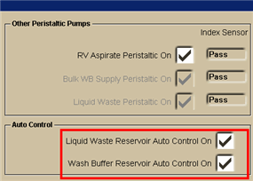

Testing Transfer Pumps During Troubleshooting
This procedure describes how to test and troubleshoot the waste fluid and wash buffer transfer pumps.
- Open the fluidics drawer to gain access to the transfer pumps.
- Select Device Diagnostics > Digital Devices > Peristaltic and Vacuum Pumps.
-
Deselect the auto-control button for the problematic device:
- Liquid waste transfer pump: deselect Liquid Waste Reservoir Auto Control On
- Wash buffer transfer pump: deselect Wash Buffer Reservoir Auto Control On

- If the problematic device is the wash buffer transfer pump, disconnect the quick-disconnects from both wash buffer containers to prevent overflow of the upper reservoir.
-
Select the check box for the problematic device:
- Liquid waste transfer pump: select Liquid Waste Peristaltic On
- Wash buffer transfer pump: select Bulk WB Supply Peristaltic On
-
Observe these areas:
- The user interface Index Sensor status. Fail means the Index Sensor is not seeing the pump rotate at the correct speed.
- The pump motor. Determine whether the problem is motor movement or a defective sensor.
- The LED on the peristaltic pump/vacuum pump interface PCB corresponding to the appropriate pump.
Note:- Additionally the AU program, inbit.exe can be used to check the Index Sensor status.
- Sometimes the LED will change states when the voltage change is not great enough to trigger a user interface change of LED state. Checking voltage on the test points of this board may be necessary.
Note: Refer to the PCB - Interface - Peristaltic and Vacuum Pump document for voltage test points and specifications.
-
Consider swapping motors, sensors, motor connections, and sensor connections between the liquid waste and wash buffer transfer pumps to troubleshoot the problematic component.
Caution: If the wash buffer transfer pump will be used to troubleshoot, disconnect the quick-disconnects from both wash buffer containers to prevent overflow of the upper reservoir.
- Check electrical connections and consider swapping MCC boards.